Protocol Buffers & API Design
TL;DR: Modern distributed systems like Uber use Protocol Buffers instead of JSON for inter-service communication. Protobuf is a binary format that is smaller (45 bytes vs 105 bytes for the same record), faster to parse, and schema-enforced — but not human-readable.
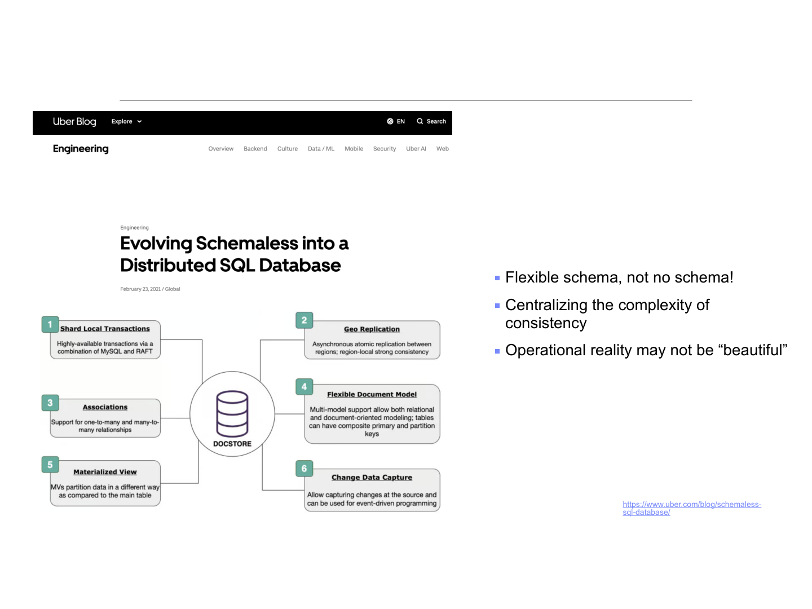
Uber’s Docstore evolved from a schemaless system to a distributed SQL database with six pillars: shard-local transactions (MySQL + RAFT), geo-replication, associations, flexible document model, materialized views, and change data capture. Key lesson: flexible schema ≠ no schema.
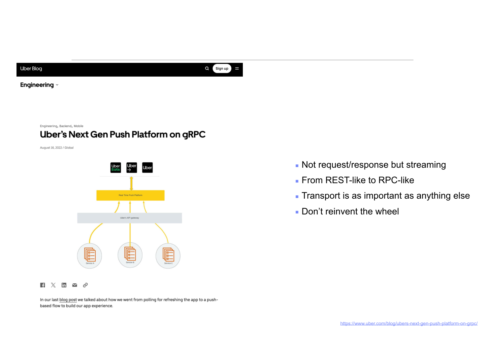
gRPC shifts from REST-like request/response to RPC-like streaming. Transport matters as much as the API design itself. The motto: don’t reinvent the wheel — use battle-tested frameworks.
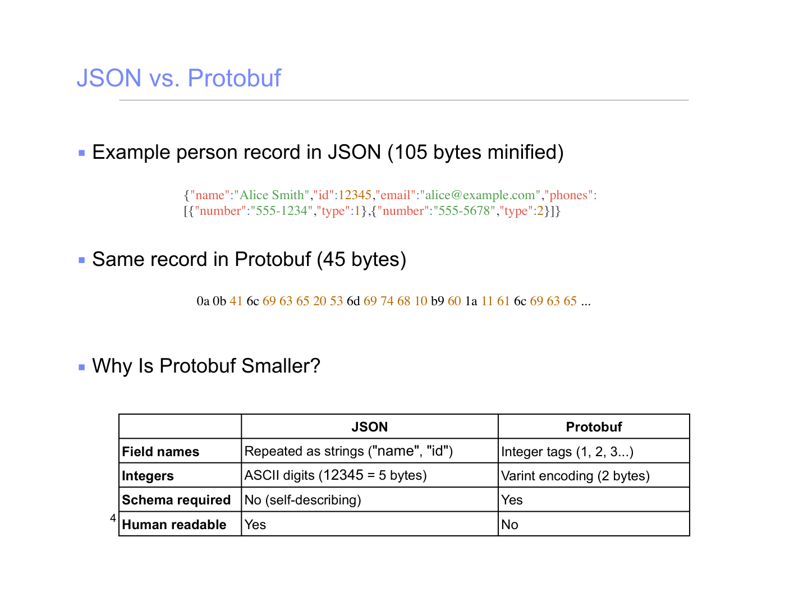
| Property | JSON | Protobuf |
|---|---|---|
| Field names | Repeated as strings ("name", "id") | Integer tags (1, 2, 3...) |
| Integers | ASCII digits (12345 = 5 bytes) | Varint encoding (2 bytes) |
| Schema required | No (self-describing) | Yes |
| Human readable | Yes | No |
The SFW Query
TL;DR: SQL’s basic building block is the SFW query:
SELECT (which columns), FROM (which table), WHERE (which rows). Selection filters rows; Projection selects columns.

Selection & Projection
Selection (WHERE)
Filters rows based on a condition.
SELECT * FROM Product WHERE Category = 'Gadgets'
Returns only rows matching the condition.
Projection (SELECT)
Selects specific columns from the output.
SELECT PName, Price FROM Product WHERE Category = 'Gadgets'
Returns only the requested attributes.


SQL Syntax Rules: Commands (
SELECT, FROM) are case insensitive. Values ('Seattle' vs 'seattle') are case sensitive. Always use single quotes for string constants.
LIKE, DISTINCT, ORDER BY, LIMIT

| Clause | Purpose | Example |
|---|---|---|
LIKE | Pattern matching on strings | WHERE PName LIKE '%gizmo%' |
DISTINCT | Eliminate duplicate rows | SELECT DISTINCT Category FROM Product |
ORDER BY | Sort results (ASC default, DESC optional) | ORDER BY Price, PName |
LIMIT | Restrict number of output rows | LIMIT 5 |

Foreign Key Constraints
TL;DR: Foreign keys enforce referential integrity — they guarantee that referenced rows actually exist. On delete, the DBA chooses: disallow, cascade, or set NULL. In practice, many large-scale systems (like GitHub) skip foreign keys for performance and sharding reasons.
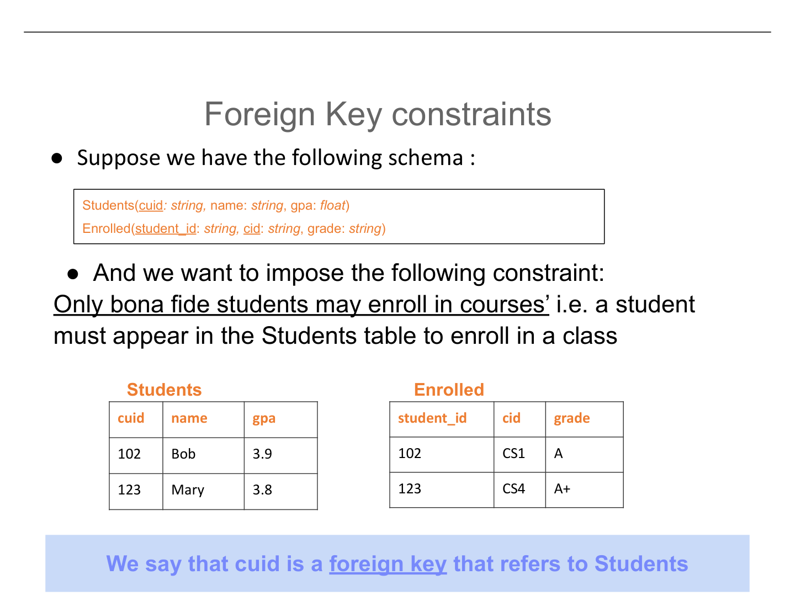
Declaring a foreign key:
CREATE TABLE Enrolled ( student_id CHAR(20), cid CHAR(20), FOREIGN KEY (student_id) REFERENCES Students(cuid))
On INSERT
Rejected if the referenced row doesn’t exist (constraint violation).
On DELETE
1. Disallow the delete
2. Cascade (remove dependent rows)
3. Set foreign key to NULL
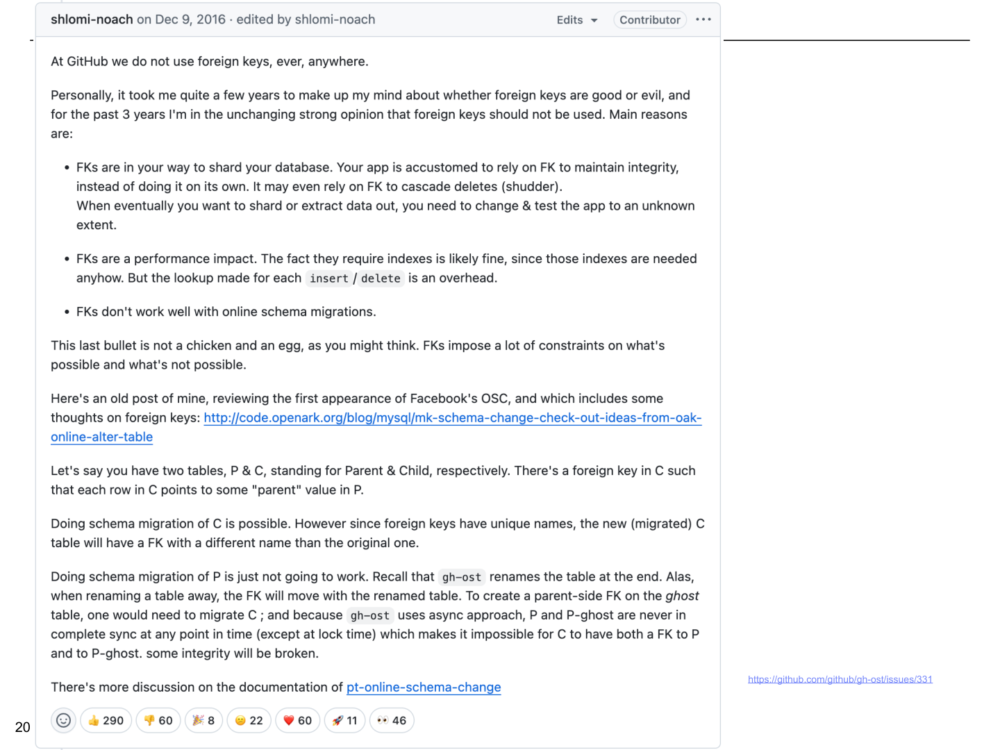
JOINs: Combining Tables
TL;DR: A JOIN combines rows from two tables based on a matching condition. Logically: take the cross product, apply selections, then project. Two equivalent syntaxes:
FROM A, B WHERE condition or FROM A JOIN B ON condition.
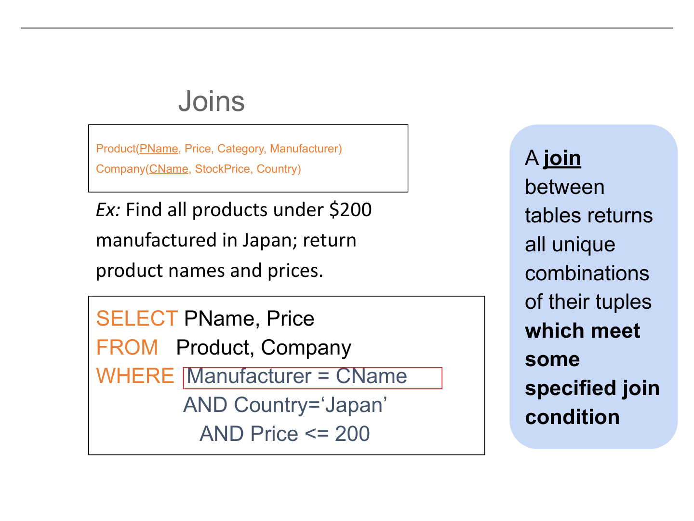
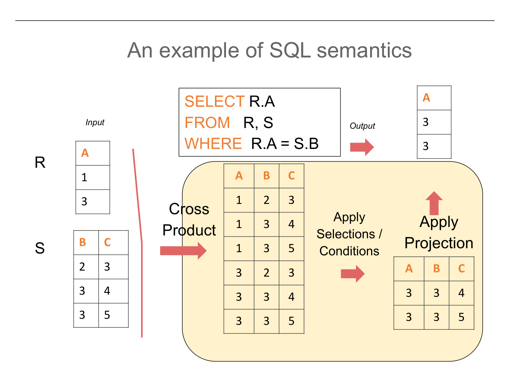
Important: This is how SQL logically works, not how the database actually executes it. Real databases use optimized execution plans, not brute-force cross products.
Aggregations & GROUP BY
TL;DR: SQL aggregation functions (SUM, COUNT, MIN, MAX, AVG) collapse multiple rows into a single value. GROUP BY partitions rows into groups first, then applies aggregates per group. HAVING filters groups (vs WHERE which filters individual rows).
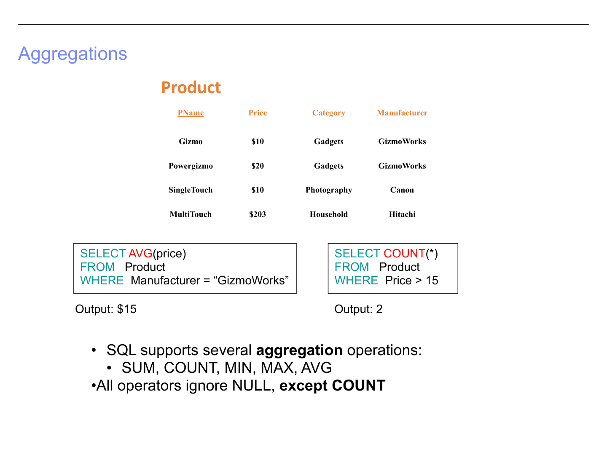
GROUP BY Semantics (3 steps):
1. Compute FROM and WHERE → get the filtered rows
2. Group rows by the GROUP BY attributes
3. Compute SELECT: grouped attributes + aggregates per group
1. Compute FROM and WHERE → get the filtered rows
2. Group rows by the GROUP BY attributes
3. Compute SELECT: grouped attributes + aggregates per group
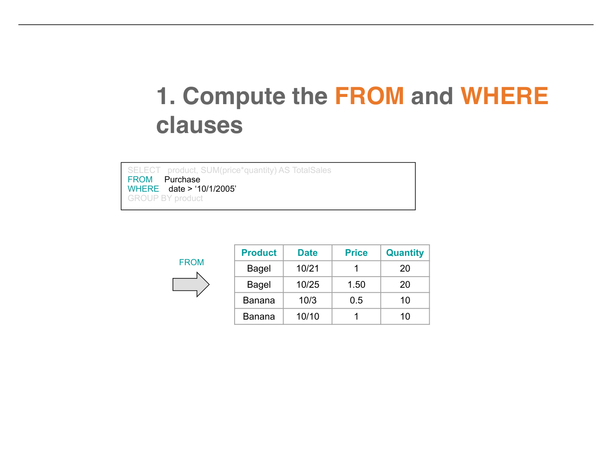
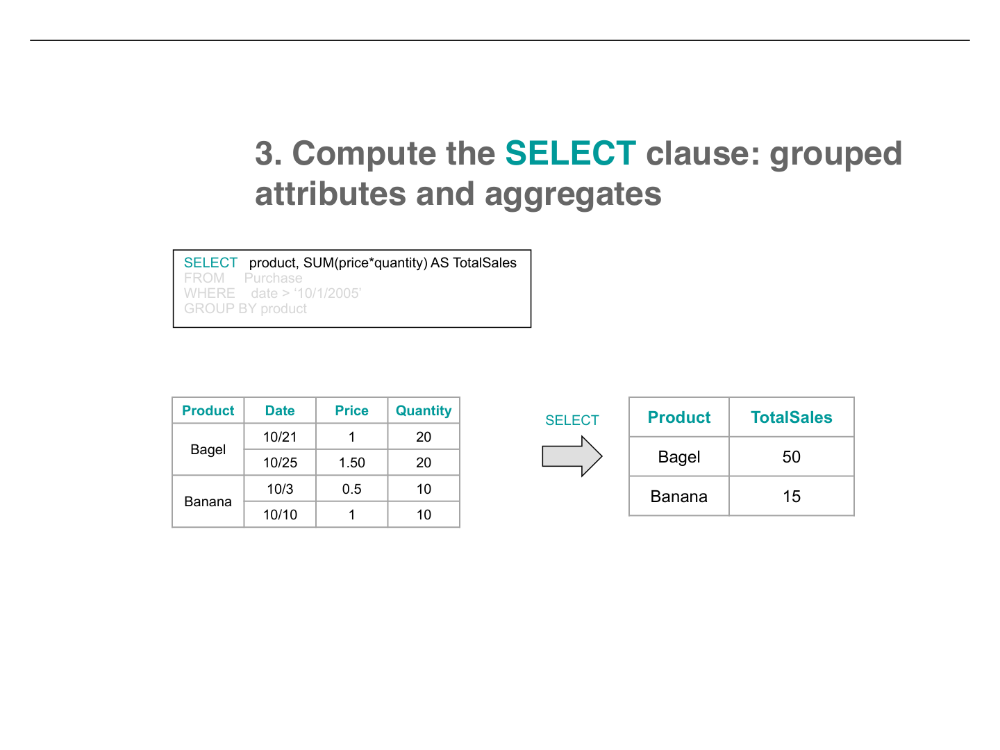
Inner vs. Outer Joins
TL;DR: Inner joins only return matching rows. Outer joins preserve unmatched rows by padding with NULL. LEFT keeps all left rows, RIGHT keeps all right rows, FULL keeps both.
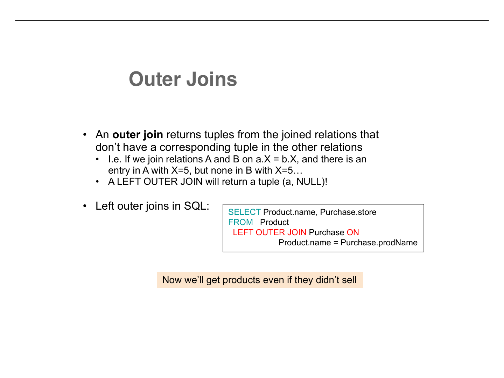
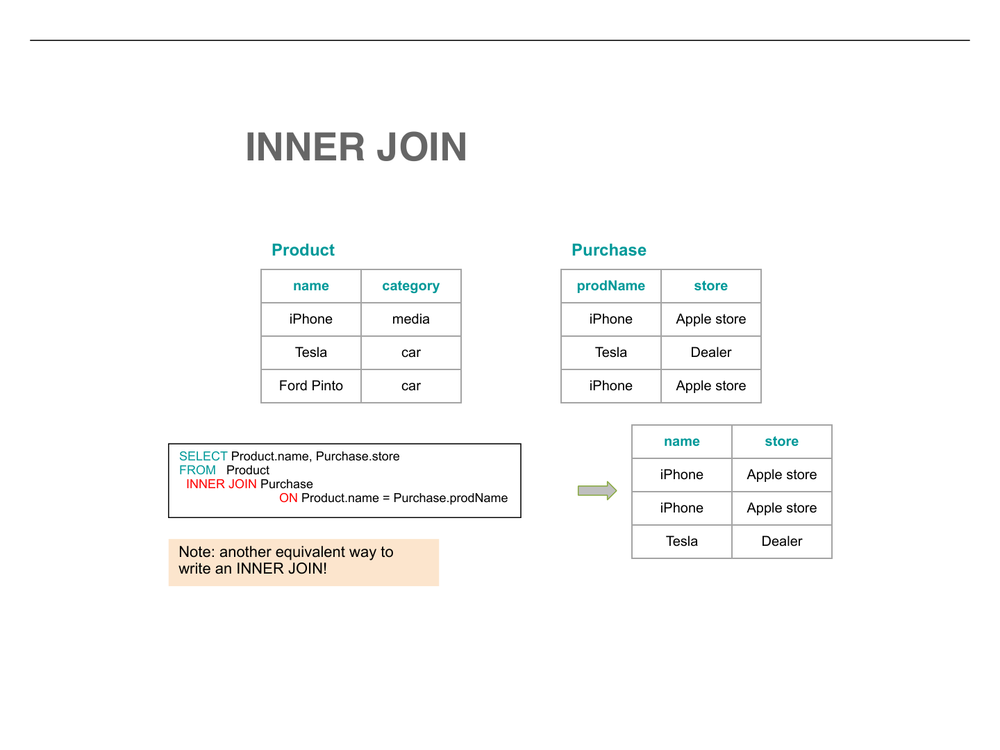
| Join Type | Min Rows | Max Rows | Keeps |
|---|---|---|---|
| Inner | 0 | L × R | Only matches |
| Left Outer | L | L × R | All left rows |
| Right Outer | R | L × R | All right rows |
| Full Outer | L + R | L × R | All rows from both |
Nested Queries & Subqueries
TL;DR: SQL is compositional — the output of one query can be the input of another. Subqueries appear in WHERE (with IN, ALL, ANY, EXISTS) or in FROM (as derived tables). Correlated subqueries reference the outer query and are powerful but harder to optimize.
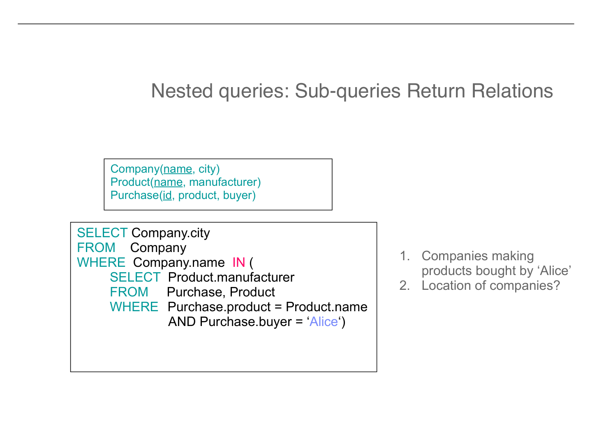
Subquery Operators
| Operator | Meaning | Example Use |
|---|---|---|
IN | Value is in the subquery result set | Find companies making Alice's products |
> ALL | Greater than every value in subquery | Products pricier than all Gizmo-Works items |
< ANY | Less than at least one value in subquery | Products cheaper than some competitor |
EXISTS | Subquery returns at least one row | Find “copycat” products with same name |
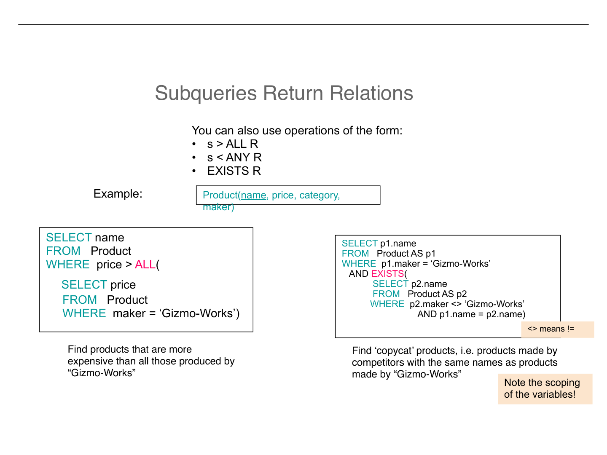
Correlated Subqueries
Correlated subquery: The inner query references a variable from the outer query (e.g.,
x.maker = y.maker). This means the subquery is re-evaluated for every row of the outer query. Powerful for complex comparisons, but harder for the optimizer.
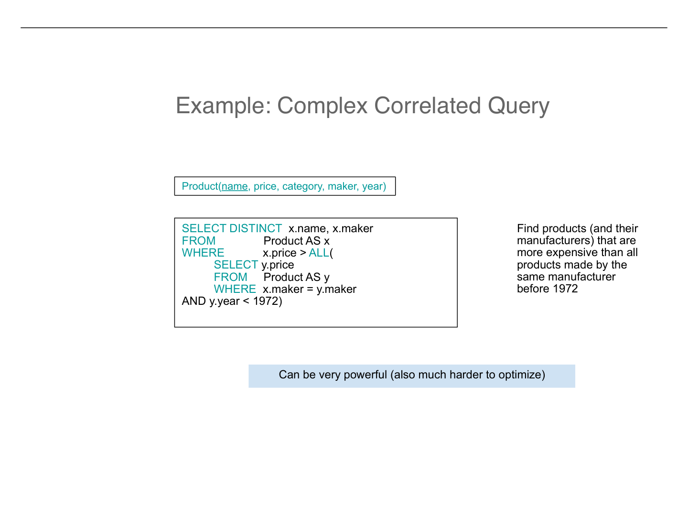
Aggregates in Nested Queries
Pattern: Use a subquery in the FROM clause to compute aggregates, then JOIN back to the original table to find the rows that match. This solves the classic “find the row with the max/min” problem.
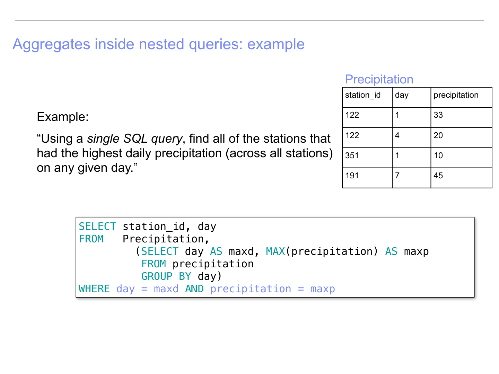
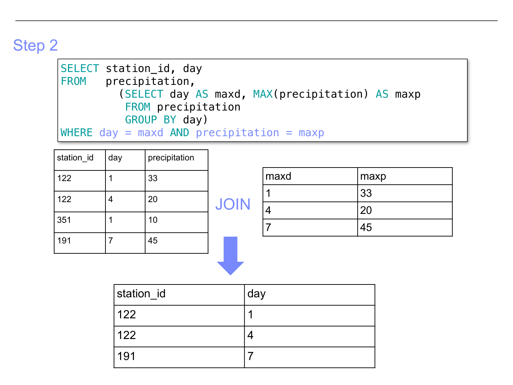
Real-World: Figma PostgreSQL Postmortem
Why this matters: Figma experienced a service disruption when a long-running expensive query caused a cascade: stale database statistics led to a bad query plan, which caused expensive table scans, which created an autovacuuming backlog. Upgrading from PostgreSQL 9 to 11 fixed both the query planner and autovacuuming performance. SQL execution planning is not just theory — it has real operational consequences.